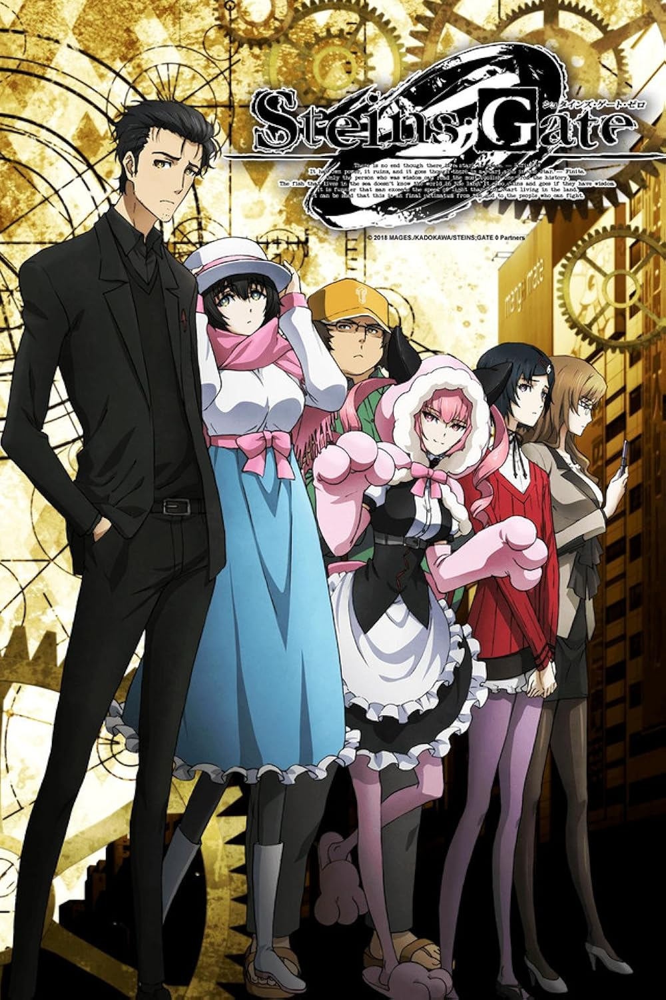
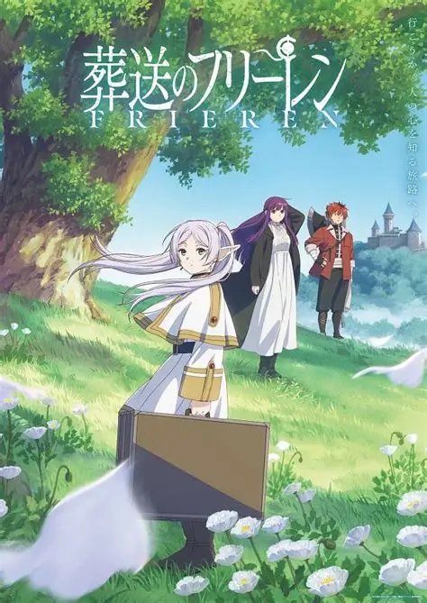
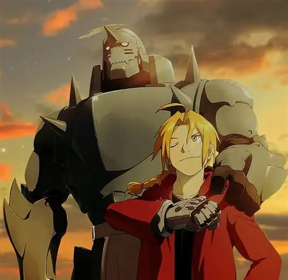
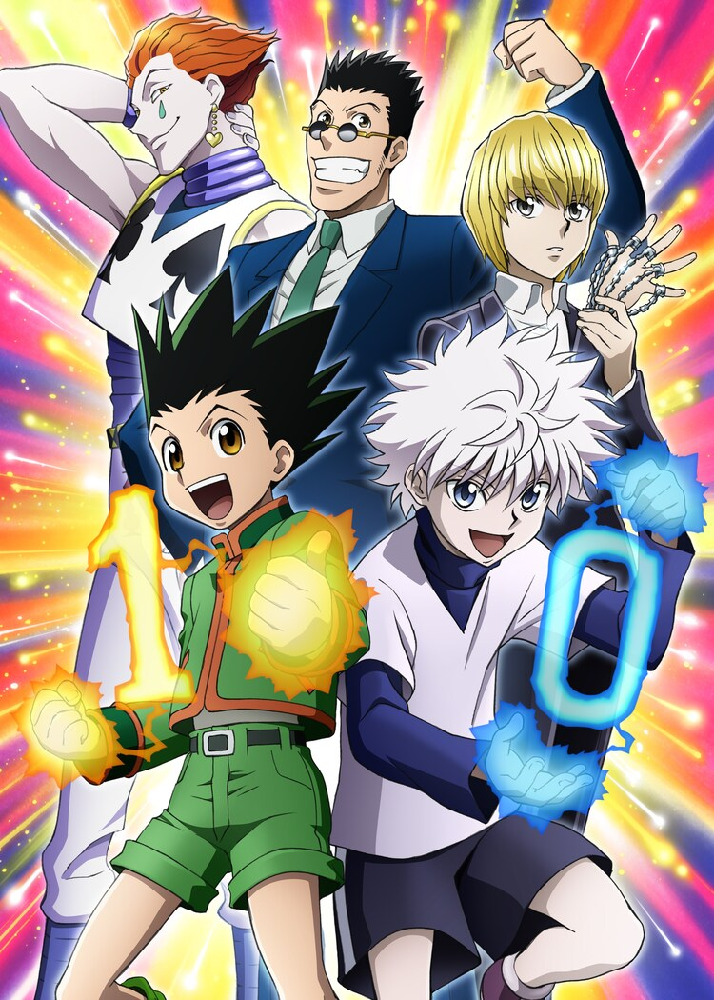

- Sousou no Frieren
- Fullmetal Alchemist: Brotherhood
- Steins;Gate 
- Shingeki no Kyojin Season 3
- Hunter x Hunter

Durante sua busca de uma década para derrotar o Rei Demônio, os membros do grupo de heróis—o próprio Himmel, o sacerdote Heiter, o guerreiro anão Eisen e a maga élfica Frieren—formam laços através de aventuras e batalhas, criando memórias preciosas e inesquecíveis para a maioria deles.

Depois que um horrível experimento de alquimia dá errado na casa dos Elric, os irmãos Edward e Alphonse se veem em uma nova realidade catastrófica. Ignorando o princípio alquímico que proíbe a transmutação humana, os garotos tentaram trazer sua mãe recentemente falecida de volta à vida. Ao invés disso, sofreram uma perda pessoal brutal: o corpo de Alphonse se desintegrou enquanto Edward perdeu uma perna e depois sacrificou um braço para manter a alma de Alphonse no plano físico, ligando-a a uma imponente armadura.
O excêntrico cientista Rintarou Okabe tem uma sede infinita por exploração científica. Junto com sua amiga atrapalhada, mas de boas intenções, Mayuri Shiina, e seu colega de quarto Itaru Hashida, Okabe funda o Laboratório de Gadgets do Futuro na esperança de criar inovações tecnológicas que confundam a mente humana. Apesar de declarações grandiosas, o único "gadget" notável que o trio criou é um micro-ondas que tem o poder misterioso de transformar bananas em uma gosma verde.

Buscando restaurar a esperança cada vez menor da humanidade, o Corpo de Pesquisa embarca em uma missão para retomar o Muro Maria, onde a batalha contra os implacáveis "Titãs" se desenrola mais uma vez.
